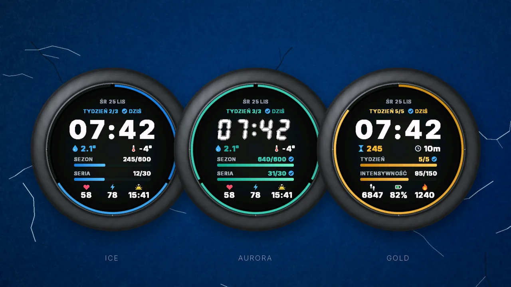

Før / i vandet / efter
Den øverste knap skifter fase. Tiden i vandet bliver bare ved med at tælle — appen siger aldrig, at du skal stige op. Det er din beslutning. Din sidste tid er kun et pejlemærke, ikke et mål, du skal slå.
Vinterbadning og isbadning, registreret rigtigt — ikke som en svømning.
5.0 i Connect IQ · 1000+ downloads
Eller søg efter “Cold Dip” i Connect IQ-appen på telefonen.


Platforme
Cold Dip er tilgængelig på Garmin-ure i dag. Amazfit-versionen (Zepp OS) er til vurdering i Zepp App Store. Versioner til Huawei, Wear OS og Apple Watch er på vej.
Lavet til et dyp, ikke en pooltur. Du har kontrollen hele tiden.
Den øverste knap skifter fase. Tiden i vandet bliver bare ved med at tælle — appen siger aldrig, at du skal stige op. Det er din beslutning. Din sidste tid er kun et pejlemærke, ikke et mål, du skal slå.
Pulsen registreres hele vejen. Vandtemperaturen indtastes manuelt og gemmes med aktiviteten.
Lufttemperatur, føles som og vind — fra Garmin-vejret på telefonen.
Stedet for dit dyp gemmes og vises på et kort i Garmin Connect.
Efter hvert dyp en hurtig vurdering af, hvordan du har det. Også puls-top og restitution samt Body Battery og stress, før du gik i.
Alt gemmes i Garmin Connect som sin egen aktivitet, ikke som en svømning.
Engelsk, polsk, tysk, tjekkisk, slovakisk, finsk, norsk, svensk, spansk, russisk, ukrainsk, dansk, fransk, nederlandsk, ungarsk, italiensk og litauisk. Appen følger automatisk sproget på uret.
Forerunner, Fenix, Epix, Enduro, Venu, Vivoactive, Instinct 2 / 3 / E / Crossover og flere. Ikke understøttet: meget gamle ure som Forerunner 920XT (Connect IQ 1.x).
Valgfrie tillæg til den gratis app — du betaler kun, hvis du vil have dem
Den app, du allerede bruger, bliver ved med at være gratis. Pro er til dem, der vil have lidt mere ud af sæsonen: nye måder at træne på, et klarere billede af fremskridtet og en enklere skærm i vandet.
$4.99 engangskøb, plus moms hvor det kræves · 7 dages gratis prøve
Prøv Pro gratis i 7 dage — derefter 4,99 USD Hent opdateringen i Connect IQ
Kør en sauna med uret på håndleddet, tag et koldt brusebad, følg en guidet kontrast af sauna og vand, eller lav en kort åndedrætsforberedelse, før du går i. Du bekræfter altid et faseskift med knappen.
Navngivne faser og alarmer på de tidspunkter, du vælger, oven i de gratis minut-, halvvejs- og 3-2-1-alarmer, som bliver som de er.
Samlet tid i vandet og i saunaen, rekorder nogensinde og i sæsonen (koldest vand, længste dyp) og historik på op til 200 sessioner. Den gratis liste viser stadig de sidste 30.
Hold en serie på 7, 14 eller 30 dage, og tjen emblemer for 10, 25, 50 og 100 sessioner, et første dyp under 5°C, en kontrastsession og sauna plus dyp i ét hug.
En stor tidtager, en side til puls og runder og temaer (is, mørk, høj kontrast, sauna). Skift side med Op og Ned.
Én kæmpe tidtager i vandet, vandtemperatur og puls. Én knap til at starte og stoppe. Ingen ekstra menuer eller skærme. Slå den til i indstillingerne, når du har låst Pro op.
Et foreslået tidspunkt ud fra vandtemperaturen, efter en almindelig klubregel (cirka lige så mange minutter, som vandet er i °C, mellem 0:30 og 5:00). Det er kun et fif: appen afslutter aldrig din session og siger aldrig, at en tid er sikker.
På nyere ure kan du fæstne et glance og komplikationer: din daglige serie, sidste dyptid og sæsonminutter. Glance er gratis på de ure. Komplikationer kræver en urskive, der understøtter app-komplikationer.
Når du gemmer et dyp, viser et enkelt kort tid, temperatur, hvordan du havde det og din serie. Tag et foto af skærmen for at dele det. En historikliste bliver på uret, og Garmin Connect får stadig FIT-aktiviteten. Der er ingen cloud-eksport eller Instagram-billede — Connect IQ kan ikke sende fotos selv.
Efter et dyp kan du se en enkel pulskurve, din top og 1- og 2-minutters restitutionsværdier. Det er kun et fif, ikke lægelig rådgivning.
Gem et badested med den sidste vandtemperatur, du registrerede dér. Når du er i nærheden, kan startskærmen vise det seneste besøg. Det er ikke en live søtemperatur — Connect IQ har ingen API til vandtemperatur.
Hvis du lader uret være udenfor, så det ikke bliver overophedet, så slå indstillingen til: appen forventer ikke puls fra håndleddet i saunaen og kan starte en opvarmningsfase bagefter. Du kan også starte opvarmning efter et dyp fra menuen.
| Hvad er inkluderet | Gratis | Pro ⭐ PRO |
|---|---|---|
| Alt, der allerede er i Cold Dip 1.0.3 — fire profiler, historik på 30, guidet åndedræt, GPS og mere | ✓ Ja | ✓ Ja |
| Sauna, kontrast og nye tilstande ⭐ PRO | — | ✓ Ja |
| Dine egne alarmer i vandet ⭐ PRO | — | ✓ Ja |
| Se hele din sæson ⭐ PRO | — | ✓ Ja |
| Rekorder nogensinde og i sæsonen — koldest vand, længste dyp ⭐ PRO | — | ✓ Ja |
| Emblemer og daglige serier ⭐ PRO | — | ✓ Ja |
| Ekstra skærme og farvetemaer ⭐ PRO | — | ✓ Ja |
| Simpel tilstand, lavet til handsker ⭐ PRO | — | ✓ Ja |
| Et tidsfif — ikke en grænse ⭐ PRO | — | ✓ Ja |
| Glance og urskive-komplikationer (nyere ure) | På nyere ure | På nyere ure |
| Sessionskort og historikliste ⭐ PRO | — | ✓ Ja |
| Puls- og restitutionkurve ⭐ PRO | — | ✓ Ja |
| Gemte steder med sidste vandtemperatur ⭐ PRO | — | ✓ Ja |
| Uret uden for saunaen og opvarmning ⭐ PRO | — | ✓ Ja |
| Pris | Gratis | 7 dages prøve, derefter 4,99 USD én gang |
Pro kører på nyere Garmin-ure med Connect IQ 4 eller nyere, herunder Venu 2 / 3 / 4, Venu Sq 2, Venu X1, vívoactive 5 / 6, Forerunner 165 / 170 / 255 / 265 / 570 / 955 / 965 / 970, fēnix 7 / 8 / 9, epix (Gen 2), Instinct 3 AMOLED, Descent Mk3, Enduro 3 / 4, Approach S50 / S70 / S72 og MARQ (Gen 2) / (Gen 3). Den kører ikke på ældre eller mere hukommelsessvage modeller som fēnix 5 / 6, den første Venu, vívoactive 3 / 4, Forerunner 55 / 245 / 645 / 945, Instinct 2, Instinct 3 Solar eller Instinct E — den gratis app virker stadig på dem. Tjek din model på listen.
I Garmin Connect gemmes en saunsession som træning eller meditation, fordi Garmin ikke har aktivitetstypen sauna.
Tidsfiffet er ikke lægelig rådgivning og betyder ikke, at en session er sikker. Koldt vand og sauna indebærer risiko. Tal med en læge, gå aldrig alene, og brug din egen dømmekraft. Du har kontrollen hele tiden.
Søg efter din model. Listen matcher de 133 ure i Cold Dip.
Meget gamle Connect IQ 1.x-ure, f.eks. Forerunner 920XT, kan ikke understøttes. Pro kræver et nyere ur — søg din model for at se, om den er med.
Urskiver
Urskiver til vinterbadning, inklusive sæsonurskiver, du tjener med dyp i Cold Dip. Mors – tarcza skifter med vejret. Mors Level vokser med dine sæsonminutter. Dip Goals og Afterdrop kommer snart.
Sæson 2026/2027
De er gratis — du kan ikke købe dem. Du låser dem kun op med dyp i den gratis Cold Dip-app.
15 dyp i en sæson. Kode MK.
50 dyp i en sæson. Kode MZ. Vælg Król eller Posejdon.
Uden rangen viser urskiven kun klokkeslæt og dato. Koden virker kun på dit ur.
Sådan låser du op


Animeret hvalrosurskive til vinterbadere
$3.99 24 timers gratis prøve
Kommer snart i Connect IQ Store Hent den i Connect IQ Se mere
Spilificeret hvalrosurskive til vinterbadning
$2.99 7 dages gratis prøve
Kommer snart i Connect IQ Store Hent den i Connect IQ Se mere

Målringe til ugentlige dyp, sæsonminutter og din serie, plus vand- og lufttemperatur, Body Battery og puls. Fire temaer.

En gratis Garmin-urskive med et stort ur og 3 datafelter. Den låser aldrig. Valgfri Afterdrop Pro låser Cold Dip-felter, lufttemperatur, solopgang og solnedgang samt 4 ekstra temaer op.
Animeret hvalrosurskive til vinterbadere
Hvalrossen reagerer på vejret: bølger i godt vejr, tager en hue på i frost, ryster sne af og hopper i ishullet, når det er tid til at bade. Klokkeslæt, dato, lufttemperatur, vejr, puls, skridt og batteri. Animationen spilles, når du vækker uret — aldrig i always-on-tilstand.
$3.99 engangskøb, plus moms hvor det kræves
På AMOLED-ure bevæger hvalrossen sig, når du løfter håndleddet — aldrig i always-on-tilstand.
Farveanimation på AMOLED-ure som Venu 2, 2 Plus, 3 og 4, vívoactive 5 og 6, Forerunner 165, 170, 265, 570, 965 og 970, Fenix 8 og 9 (AMOLED), Epix 2, Descent Mk3, D2 Mach, Approach S70 og S72, Instinct 3 AMOLED og MARQ 2 og 3.
Denne urskive er ikke tilgængelig på MIP-ure eller ure med mindre hukommelse som Fenix 5 Plus, Fenix 6 og 7, Fenix Solar, Forerunner 245, 255, 745, 945 og 955, Enduro, Descent Mk2, vívoactive 4, Venu 1 og første generations MARQ. De skærme kan ikke vise den farverige animation.
Spilificeret hvalrosurskive til vinterbadning
Din hvalroskammerat stiger i niveau gennem 5 trin, efterhånden som dine sæsonminutter i koldt vand vokser — synkroniseret live fra den gratis Cold Dip-app. Et dampende ishul om vinteren, en strand om sommeren, et emblem for dage i træk, vandtemperatur, puls, batteri og en ren always-on-skærm. Wake-animationen spilles, når du vækker uret — aldrig i always-on-tilstand.
$2.99 engangskøb, plus moms hvor det kræves · 7 dages gratis prøve
For at stige i niveau med live minutter, serie og vandtemperatur skal du installere den gratis Cold Dip app. Uden den viser de felter i stedet bare data fra uret.
NOVICE 1/5


5 levels
1/5
0–29 min i denne sæson
2/5
30–119 min i denne sæson
3/5
120–299 min i denne sæson
4/5
300–599 min i denne sæson
5/5
600+ min i denne sæson


Farveanimation på 51 AMOLED-ure som Venu 2, 2 Plus, 3 og 4, vívoactive 5 og 6, Forerunner 165, 170, 265, 570, 965 og 970, Fenix 8 og 9 (AMOLED), Epix 2, Descent Mk3, D2 Mach, Approach S70 og S72, Instinct 3 AMOLED og MARQ 2 og 3. Always-on bruger meget få tændte pixels.
En tydelig, statisk skive på 19 MIP-ure som Fenix 7, Fenix 8 Solar, Forerunner 255 og 955 samt Enduro 3 og 4. I alt understøtter Mors Level 70 Garmin-ure, på 11 sprog.
Gennemsnitlig vurdering 5,0 ★ i Connect IQ Store og 1000+ downloads.
★★★★★
„Super, pierwsze morsowanie z apką za mną, działa! Tego mi było trzeba! Dzięki”
Super, mit første vinterbad med appen er overstået, den virker! Lige det, jeg havde brug for! Tak (Oversat fra polsk)
★★★★★
„Rewelacyjna apka. Przetestowana podczas morsowania. Wszystko działa dobrze”
Fremragende app. Testet under vinterbadning. Alt virker godt (Oversat fra polsk)
★★★★★
„Działa nawet na starszym Garminie za co duże brawa dla autora”
Virker endda på et ældre Garmin — stort bifald til ophavsmanden (Oversat fra polsk)
★★★★★
„Świetna sprawa!💙”
Fed ting!💙 (Oversat fra polsk)
Ét dyp fra start til gem — rigtige skærme fra Garmin-simulatoren.


Seneste versioner af Cold Dip.
Ranger er gratis og kun for sjov — ingen konkurrerer med nogen: Pingvin (1), Sæl (5, 7 dage Pro gratis), Gerillahvalros (15, en kode til urskiven Mors Komandos 2026/2027), Veteranhvalros (30, −30 % på Mors Level / Dip Goals, koder kommer snart) og Legendehvalros (50, en kode til en guldskive efter eget valg: Mors Legenda Król 2026/2027 eller Mors Legenda Posejdon 2026/2027). Højst ét dyp om dagen tæller (sæson 1. oktober – 30. april), og en session kun i sauna tæller ikke. Det er tre separate sæsonurskiver, som snart kommer i Connect IQ-butikken, gratis at installere: tjen dem med en rang i Cold Dip. De indgår ikke i pakkerne til 5,99 / 7,99 USD, og der kommer nye urskiver hver sæson.
Alle rekorder — koldest vand og længste dyp, nogensinde og i denne sæson — er nu en del af Pro. De gemmes stadig for alle, og den gratis app viser “Ny rekord! Se den i Pro”. En engangsopfordring til en bedømmelse vises efter dit tredje dyp. Tidtagning, puls og gemning til Garmin Connect forbliver gratis. På ældre og sort-hvide ure uden Pro forbliver rekorder gratis.
Vandtemperaturen kan nu sættes under 0°C.
Vandtemperaturen, der indtastes efter udstigning, gælder nu kun for den session. Prompten ignorerer et utilsigtet tryk lige efter udstigning. Mere robust: fuld hukommelse eller en gemmefejl fryser ikke længere appen, og et ikke-understøttet felt eller en sportsgren på et ældre ur stopper ikke længere starten. Rettede polske og russiske opvarmningstips.
Rettet et crash cirka 20 sekunder efter gemning af en session (rapporteret på Venu 3S). Når du er steget op, spørger uret om vandtemperaturen; det er gratis og kan slås fra i indstillingerne.
Cold Dip Pro er her. Alt fra 1.0.3 forbliver gratis. Pro er valgfri: en engangsudløsning til 4,99 USD, med 7 dages gratis prøve. Nye tilstande: sauna, koldt brusebad, guidet kontrast og åndedrætsforberedelse; egne alarmer og navngivne faser i vandet; sæsonstatistik, emblemer og daglige serier (7 / 14 / 30); ekstra skærme, farvetemaer og simpel tilstand.
133 ure, herunder Instinct 2, Instinct 2S, Instinct 2X, Instinct 3 Solar, Instinct E og Instinct Crossover, plus et nyt sort-hvidt layout til MIP-skærme.
126 ure, herunder Forerunner 55.
105 ure, herunder rektangulære layouts til Venu X1 og Venu Sq 2.
Første udgivelse.
“Działa idealnie” (Virker perfekt)
Et dyp på over 10 minutter ved 5°C — vandtemperatur på uret, og alle data gemt i Garmin Connect.
Et par ting, folk ofte spørger om efter installationen.
Installér den fra Connect IQ Store-appen på telefonen — ikke fra Google Play eller App Store. På uret finder du Cold Dip i listen over aktiviteter / apps.
I profilen “Ishul” bruger du knapperne − / + på startskærmen. I andre profiler indstilles den fra menuen: “Manuel vandtemp.” Hvis du ser “--°C” i vandet, er temperaturen endnu ikke sat.
Åbn aktiviteten, gå til fanen Statistik, og rul ned til afsnittet “Connect IQ”. Puls, vandtemperatur, vejr, hvordan du havde det og fasetiderne er der alle sammen. Felterne på oversigten er sat af Garmin — appen kan ikke ændre dem.
Nej. Uret kan ikke måle kropstemperatur. Sensoren læser urets egen temperatur, som påvirkes af din hud og luften. Vandtemperaturen i Cold Dip indtastes manuelt.
Kalorier estimeres af uret ud fra pulsen, og beregnes ikke af Cold Dip.
Ja. Registreringen kører på uret, så telefonen kan blive i tasken. Uden telefonen mister du kun vejret, fordi det kommer fra Garmin-vejret på telefonen. Aktiviteten synkroniseres til Garmin Connect, næste gang uret forbinder til telefonen. Du skal bruge telefonen til at installere appen og til at låse Pro op.
Uret kan ikke selv måle vandtemperaturen — den indbyggede sensor læser uret, som er varmet af din hud og luften. I Cold Dip indstiller du vandtemperaturen med − / + (eller i menuen), og efter du er steget op, spørger appen om den. Hvis du har en parret Garmin Tempe-sensor, bruger appen dens måling. Urets sensor og lufttemperaturen udgives aldrig for at være vandtemperatur.
Pro er valgfri, og appen forbliver gratis. Pro tilføjer sauna, koldt brusebad, guidet kontrast og åndedrætsforberedelse, egne alarmer, sæsonstatistik, rekorder nogensinde og i sæsonen (koldest vand, længste dyp), emblemer og daglige serier, ekstra skærme og temaer, en handskevenlig simpel tilstand, et tidsfif efter vandtemperatur (et fif, aldrig en grænse) og en pulskurve. Det koster 4,99 USD én gang efter en 7-dages gratis prøve. Se alle Pro-funktioner.
Betalingen går gennem KiezelPay. Når du vil beholde Pro, viser uret en 6-cifret kode. Indtast den på kzl.io/cold-dip-pro (til de betalte urskiver: kzl.io/code) og betal én gang. Hold telefonen i nærheden med Garmin Connect og Bluetooth tændt — uret låses op via den forbindelse, typisk inden for 5 minutter.
Mere end 130 Garmin-ure med Connect IQ: Forerunner, fēnix, epix, Enduro, Venu, vívoactive, Instinct 2 / 3 / E / Crossover og flere. Pro kræver Connect IQ 4 eller nyere. Meget gamle modeller som Forerunner 920XT understøttes ikke. Tjek din model.
En version til Amazfit (Zepp OS) er klar og venter på vurdering i Zepp App Store. Versioner til Huawei, Wear OS (Samsung Galaxy Watch, Pixel Watch) og Apple Watch er under forberedelse — ingen datoer endnu. Få besked.
Koldt vand er alvor. Det er almindelige sikkerhedspåmindelser, ikke lægelig rådgivning. Du bestemmer, hvornår du går i, og hvornår du stiger op.
Gå altid med nogen, der kan hjælpe, hvis du kommer i vanskeligheder, eller sørg for, at nogen på land holder øje med dig.
Hvis du er ny i koldt vand, så væn dig til det over tid i stedet for at starte med et langt dyp i meget koldt vand.
Mange starter med kun kort tid i vandet og bygger langsomt op. Der er ingen tid, du “skal” holde til.
Forlad vandet, så snart du mærker, at du burde — kraftig rysten, smerte, følelsesløshed, forvirring eller bare en fornemmelse af, at det er nok. Cold Dip siger aldrig, at du skal stige op, og sætter aldrig en måltid, du skal slå. Din sidste tid er kun et pejlemærke.
Bliv tør og varm så hurtigt som muligt, efter du er steget op. Hav varmt tøj klar, før du går i.
Når du er steget op, kan din kernetemperatur blive ved med at falde et stykke tid, mens køligere blod vender tilbage fra hud og lemmer. Det kaldes ofte afterdrop. Bliv ved med at varme op, tag det roligt, og vent med at køre bil eller cykle, til du har det godt.
Cold Dip er en registreringsapp, ikke et medicinsk udstyr, og den giver ikke lægelig rådgivning. Den kan ikke sige, om det er sikkert for dig at gå i koldt vand. Hvis du har en helbredstilstand, er gravid eller i tvivl, så tal først med en fagperson.
Korte, praktiske tekster fra en vinterbader. Almindelige råd, ikke lægelig rådgivning.
En populær klub-tommelfingerregel efter vandtemperatur — og hvorfor det ikke er en sikker grænse.
Hvorfor du kan føle dig koldere, efter du er steget op, og hvordan du varmer roligt op.
Første dyp trin for trin: selskab, korte tider, varmt tøj klar.
Et kort kig på ét dyp, fra startskærmen til gemningen i Garmin Connect.
Cold Dip kommer til flere ure. Efterlad din e-mail, og vælg dit ur — jeg skriver én gang, når den version er klar.
Jeg gemmer kun din adresse for at sende dig denne ene besked. Intet nyhedsbrev. Skriv til mig, så sletter jeg den. Vil du hellere sende en almindelig e-mail? lukasz.pszenny@gmail.com
Driver du en vinterbadegruppe, klub eller fanside? Du er velkommen til at dele Cold Dip med dine medlemmer. Den er gratis, og grafikken og teksten nedenfor er klar til at blive slået op.
Skriv til mig, så får din klub sin egen rabatkode til Pro til medlemmerne.
Til omklædningsrummet, saunaen eller klubbens opslagstavle. QR-koden fører til denne side.
En Garmin-urskive med dit klublogo, lavet efter ønske. Fortæl mig, hvad du har i tankerne.
Har du en idé til en Garmin-app eller urskive? Skriv til mig, og fortæl hvilket ur du bruger.
Hvis du allerede bruger Cold Dip, hjælper en anmeldelse i Connect IQ rigtig meget — tak!
Cold Dip er gratis. Hvis den hjælper dig med dine dyp, kan du støtte arbejdet bag den.
Køb mig en kaffe